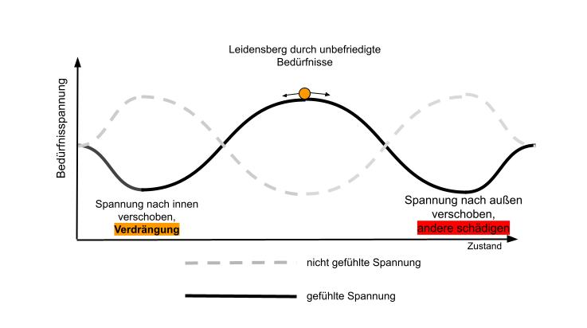
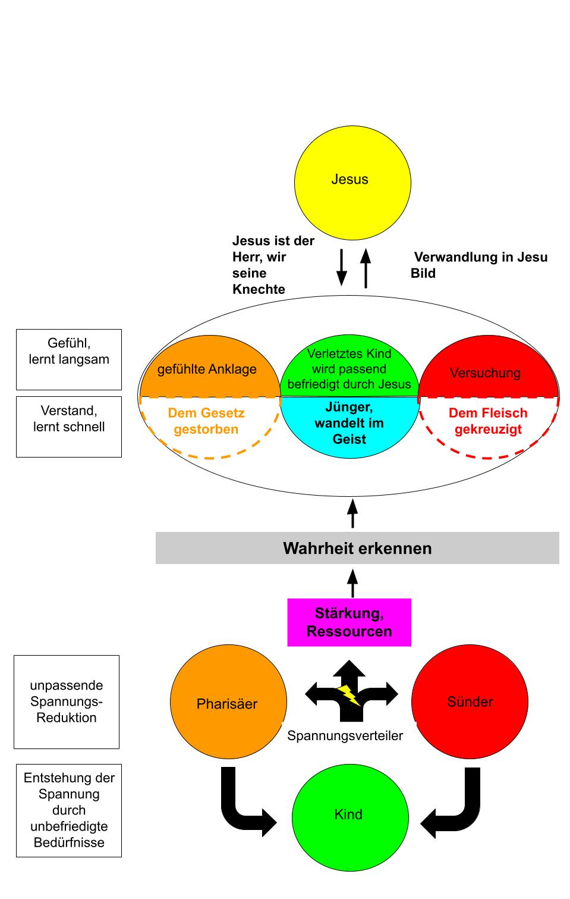
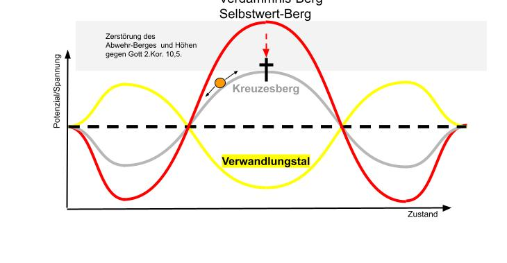
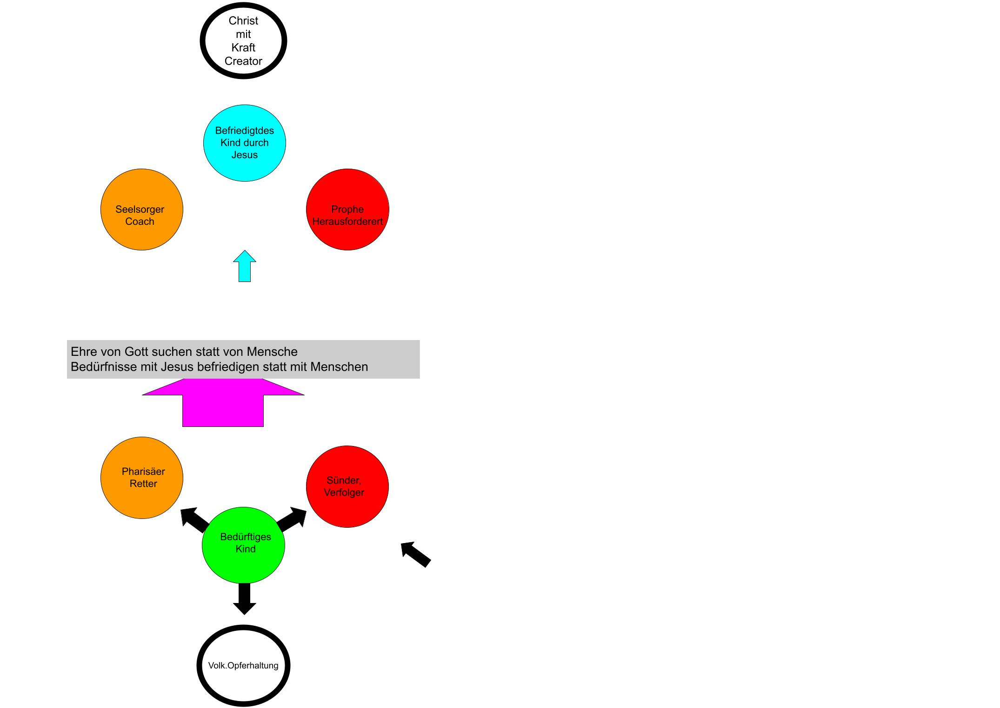

Die zentralen Diagramme, die zeigen, wie Verdrängung entsteht und wie Jesus uns in echte Verwandlung führen kann. Hier findest du die ausführlichen Erklärungen zu den vier Schlüsselmodellen.
Wie wir uns selbst austricksen und die Spannung nur verschieben – Abbildung 1

Wenn unsere gottgegebenen Grundbedürfnisse nicht befriedigt werden, entsteht eine Bedürfnisspannung. Das sind Gefühle, die uns eigentlich dabei unterstützen sollen, die berechtigten Bedürfnisse zu befriedigen. Wenn wir jedoch – zum Beispiel in unserer Kindheit durch unsere Eltern – nicht gelernt haben, unsere Bedürfnisse auf eine passende Weise zu befriedigen, bleibt die Bedürfnisspannung bestehen.
Wir haben dann meist unbewusst auf unpassende Weise versucht, die Spannung kurzfristig zu senken, zum Beispiel durch das Verdrängen von Gefühlen ins Unbewusste. Im Diagramm rollt die orangene Kugel nach links ins Tal, während die unbewusste, verdrängte Spannung steigt. Die Spannung ist damit aber nicht weg. Sie kommt meist später – oft sogar stärker oder in anderer Form – wieder hervor. So tricksen wir uns selbst aus.
Die Bedürfnisspannung kehrt immer wieder zum inneren Kind zurück. Dann kann die Spannung auf eine andere Weise unpassend reduziert werden. Es entsteht ein Teufelskreis: Verdrängung nach innen (z. B. durch Leugnen oder Verdrängen von Gefühlen) oder ungesunde Ausagieren nach außen (z. B. durch Suchtverhalten, Aggression oder andere schädliche Strategien), die andere verletzen oder die eigene Situation verschlimmern.
Die vier inneren Modi und wie Jesus uns aus dem Teufelskreis führt – Abbildung 2

In dem Modus-Modell entsteht die Bedürfnisspannung im grünen inneren Kind. Im Spannungsverteiler (schwarzer Knotenpunkt) wird meist unbewusst entschieden, wie die Spannung reduziert werden soll.
Im schwarzen Pfeil nach oben wird die Spannung durch passende Bedürfnisbefriedigung mit Jesus befriedigt. Dort ist der Ausgang aus dem Teufelskreis. Zu den Seiten hin wird die Bedürfnisspannung unpassend reduziert – entweder in den Pharisäer- oder in den Sünder-Modus. Die Spannung kehrt jedoch immer wieder zum inneren Kind zurück und kann dann auf eine andere Weise unpassend reduziert werden.
Wenn wir mit Jesus anfangen, die „Gefangenen“ (unpassende Gedanken, Gefühle und Selbstwert-Themen) zu betrachten, beginnt die Verwandlung. Mit dem Verstand verurteilen wir die Werke des Gefangenen schnell (gestrichelter roter und orangener Halbkreis). Aber unsere Gefühle lernen langsam. Deswegen werden wir noch versucht (roter Halbkreis).
Damit die Gefühle wirklich lernen, brauchen wir viele positive Erlebnisse mit Jesus. Wir müssen oft unsere gottgegebenen Bedürfnisse mit ihm befriedigt haben. Dann werden die unpassenden Gefühle, die uns zu unpassender Bedürfnisbefriedigung drängen, nicht mehr aktiviert. Sie haben gelernt und treiben uns jetzt zu einer gesunden Bedürfnisbefriedigung mit Jesus.
Im unteren Teufelskreis steht links der Pharisäer für Verdrängung der Gefühle und Gedanken. In christlichen Kreisen wird das negative Ausagieren (Sünde, rot) meist deutlich verurteilt und erkannt. Der Pharisäer dagegen versteckt sich hinter Heuchelei – oft unbewusst. Deshalb fokussieren wir uns so stark darauf, wie Jesus es tat (Luk. 12,1).
Wenn man die Verdrängung und Heuchelei mit dem Verstand erkannt, sich davon distanziert und hinter Gittern gesteckt hat, ist man dem Gesetz gestorben (Gal. 2,19) und nicht mehr unter dem Gesetz (Gal. 5,18). Wenn sowohl dem Gesetz gestorben als auch das Fleisch gekreuzigt ist (beides hinter Gittern und gefangen), dann wandeln wir im Geist (Gal. 5,16) und sind Jünger Jesu.
Dann kann man noch versucht werden zur Sünde, weil die Gefühle noch nicht gelernt haben. Auch können noch unberechtigte Anklagen vom Pharisäer kommen (orangener voller Halbkreis).
In der Zeichnung ist die unbewusste Sünde aus dem unteren Teufelskreis nicht eingezeichnet – sie existiert aber. Um mehr verwandelt zu werden, muss man daran interessiert sein, auch die unbewusste Sünde zu erkennen. Man muss die Wahrheit lieben, um errettet zu werden (2. Thess. 2,10). Gottes Wort dringt ein bis zu den Gesinnungen und Motiven des Herzens (Hebr. 4,12) und macht unreine unbewusste Motive sichtbar. Diese können dann am Gnadenstuhl verwandelt werden.
Durch das Tal – mit Jesus am Kreuzesberg – Abbildung 3

Um aus diesem Teufelskreis auszusteigen, muss man die Reaktionen auf die unbefriedigten Bedürfnisse fühlen können, ohne sie vorschnell und kurzfristig wegzuschieben. Die Gefühle und Reaktionen auf unbefriedigte Bedürfnisse können unter anderem Wut, Traurigkeit, Angst, Scham, Verzweiflung und Verlassenheitsgefühle sein.
Wenn diese Gefühle aufgrund eines Traumas zu stark werden, kann man sie nicht ertragen – man kann dann nicht verwandelt werden. Wenn die Gefühle aber verboten oder unerwünscht sind (z. B. Wut oder Traurigkeit), dann kann man diese Gefühle auch nicht lange fühlen. Wenn meine Fehler zu stark an meinem Selbstwert kratzen, werden sie oft wegerklärt.
Echte Verwandlung führt oft durch ein Tal der Spannung. Wenn wir alte Muster loslassen und uns ehrlich mit Jesus auseinandersetzen, steigt zunächst die Spannung (Abwehr-Berg / Repellor-Berg). Wer jedoch mit Jesus durch dieses Tal geht, ohne in Verdrängung oder Chaos abzurutschen, erlebt echte Verwandlung und Freiheit. Der Kreuzes-Berg senkt sich zu einem Verwandlungs-Tal. Man rollt automatisch in das richtige Tal und wird auf diesem Gebiet nicht mehr versucht und in Jesu Bild verwandelt (Röm. 8,29).
Wenn man Menschen zu mehr Verwandlung helfen will, stößt man schnell auf diese Abwehr-Berge. Oft ist es leider unmöglich, diese Abwehr einfach zu durchbrechen. Hier sind die wichtigsten Wege:
Bei Traumatisierung muss man zuerst die Ressourcen stärken (siehe Modus-Diagramm). Die Menschen dort stützen, wo sie schon gut gelernt haben, ihre Bedürfnisse zu befriedigen, und sie dafür loben. Sie müssen auch in einer sicheren Umgebung leben. Dann kann man vielleicht unter kleinen, kurzen Dosierungen das Trauma zulassen. Die Sicherheit kann durch die Nähe zu Jesus unterstützt werden.
Manche Gefühle wie Zorn oder Traurigkeit können unter anderem aufgrund falscher christlicher Auslegungen verboten oder unerwünscht sein. Diese Verdammnis darüber kann durch den barmherzigen Hohepriester auf dem Gnadenstuhl aufgehoben werden (Röm. 8,1; Hebr. 4,16).
Paulus schreibt in 2. Kor. 10,5, dass wir jede Höhe (also den Abwehr-Berg), die sich wider die Erkenntnis Gottes erhebt, zerstören und jeden Gedanken gefangen nehmen sollen im Gehorsam Christi. Wenn man einen Gedanken oder ein Gefühl gefangen nimmt, folgt man ihm nicht und verdrängt ihn auch nicht. Man nimmt den Grund gefangen, setzt ihn hinter Gittern und betrachtet ihn. Dann kann man den Jesus-Stuhl anwenden. Jetzt wurde die Spannung des Abwehr-Berges reduziert. Man kann das Gefühl fühlen, ohne ihm Recht zu geben und ohne davon überwältigt zu werden. Jesus ist barmherzig und verurteilt mich nicht.
Wenn unser Selbstwert zu stark angekratzt wird, finden in der Regel unbewusst gedankliche Realitätsverzerrungen statt. Die Realitätswahrnehmung wird so verändert, dass der Selbstwert erhalten bleibt. Dann kann man die Realität der eigenen Gefühle und Gedanken nicht mehr betrachten und Verwandlung wird unmöglich. Der barmherzige Hohepriester kann uns dann einen Wert in Jesus geben. Danach kann man den falschen Selbstwert auch gefangennehmen.
Jesus und ich sitzen nebeneinander auf dem Stuhl. Vor uns stehen die gefangenen Gedanken, Gefühle oder Selbstwert-Themen. Wir schauen gemeinsam auf den Gefangenen hinter den Gittern. Wir reden mit ihm. Wir leiden mit Jesus, indem wir die Gefühle des Gefangenen in uns haben. Und Jesus verwandelt ihn (Röm. 8,17). Dann sind wir mit Jesus gekreuzigt (Gal. 2,20).
Wie wir in Beziehungen in ungesunde Muster geraten – und wie wir aussteigen – Abbildung 4

Viele Beziehungen – besonders mit traumatisierten Menschen – drehen sich im Drama-Dreieck: Opfer – Verfolger – Retter. Das Drama-Dreieck entsteht, wenn man seine Bedürfnisse mit einer Forderung an die anderen befriedigen will, aber aus unterschiedlichen Positionen heraus.
Wenn das Opfer vom Retter nicht die geforderte Hilfe bekommt, wird es zum Verfolger. Wenn der Retter nicht die Anerkennung vom Opfer bekommt, wird er zum Verfolger.
Wenn Kinder durch die Eltern nicht lernen, ihre Bedürfnisse passend zu befriedigen, lernt das Kind, die Bedürfnisse unpassend zu befriedigen. Die Bedürfnisspannung bleibt bestehen und wird zur Gewohnheit. Als Erwachsener erlebt man schneller eine Bedürfnisspannung als Menschen, die es besser gelernt haben. Zum Beispiel tauchen Wut, Traurigkeit, Angst und Unzufriedenheit ziemlich schnell auf. Dadurch landen solche Menschen schneller im Drama-Dreieck, bekommen schneller psychische und körperliche Krankheiten.
Meine christliche Lösung ist es, die Ehre von Gott zu suchen statt die Ehre von den Menschen und dadurch seine Bedürfnisse mit Gott zu befriedigen. Dann steigt man aus dem Drama-Dreieck aus und kommt in das obere positive Dreieck, das auch als Empowerment-Dreieck bezeichnet wird.
Im Bild siehst du genau diesen Übergang:
Der Weg nach oben führt über das befriedigte Kind durch Jesus. Die zentrale Botschaft im grauen Kasten lautet: „Ehre von Gott suchen statt von Menschen – Bedürfnisse mit Jesus befriedigen statt mit Menschen“. Genau das ist der Schlüssel, um aus dem Drama auszusteigen und in gesunde, kraftvolle Beziehungen zu kommen.